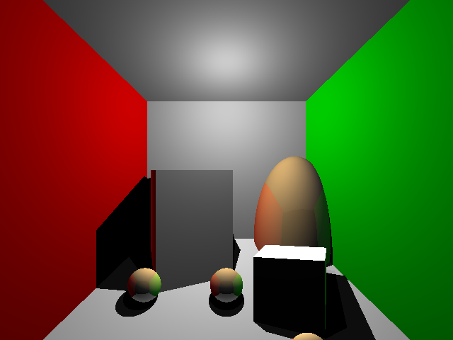

ray tracer
I spent last two months following UCSD's computer graphics course at Coursera, and spent the last month completing the final assignment: writing a ray tracer from scratch.
My code can be found here.
This is also my first not-hello-world project of C++.
The project was very fun to do (I've always been interested in computer graphics, it being the combination of CS, physics, and basically the whole world). It also gave me many frustrating late nights...
Coming from a scala background, it took me some time to get used to the memory allocation and management.
For unit test, I used googletest for unit test. This project also proves Xcode can be a pleasant enough IDE even with pure C++ projects.
The current ray tracer is not very efficient, by my calculation it takes several days to render the stanford dragon. I intended to implement some optimization as mentioned by the course, for example, using grids, but was not successful. I have pushed relevant code onto another branch ("cube") and may work on this in the future.
Below are some images rendered by the ray tracer:
A thousand spheres:
Cornell box: I used maxdepth=5 for recursive ray tracing. We should be able to get higher image quality if maxdepth is set higher.

Comments
Comments powered by Disqus